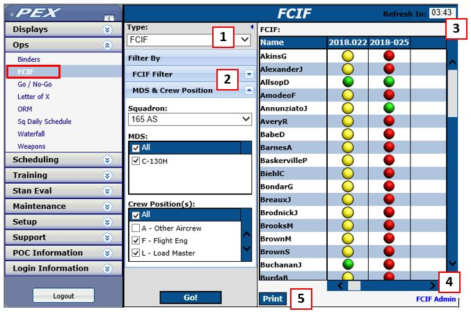
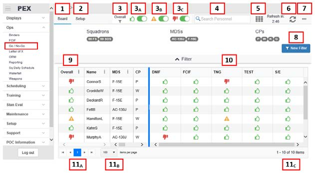
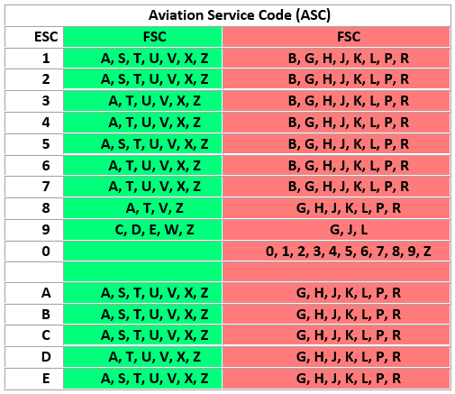
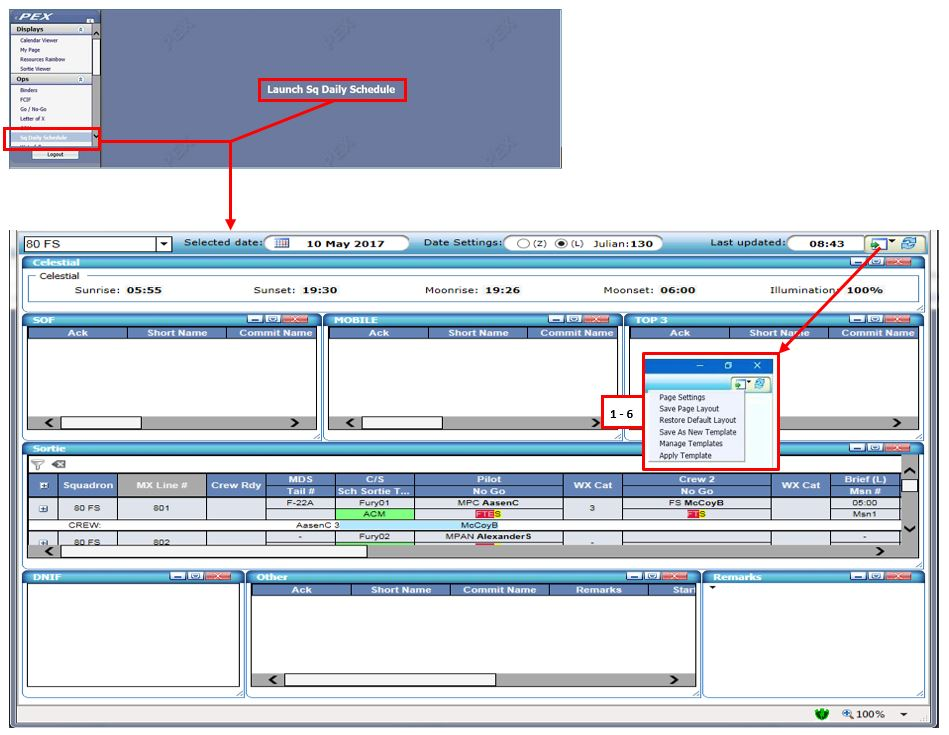

Ops¶
Binders¶
Introduction
The Binders module allows you to create and maintain electronic binders for purposes such as program continuity, self-assessment, mobility, etc. It is accessed through the PEX main menu via Ops>Binders. The Binders module is divided into two sections, Binders and Setup. The Setup page allows you to create different Binder Types and Documentation Folders to setup your binders. The Binders page allows you to create binders; associate owners and alternate owners to the binder; import and export binders and add observations and documents to a binder. PEX allows you to create different binder types such as Self-Assessment, Continuity, etc. This enables you to establish a standardized documentation folders structure for each binder type.
A Self-Assessment binder type with its associated documentation folders is delivered with PEX software.
Permissions
Two (2) permission roles and four (4) pseudo-roles can access Binders, in addition to PEX Admin and Administrator:
- Binder Administrator can perform every function in the module and can access and manage every binder for each squadron in which they are assigned the role.
- Binder Read Only is able to access and view every binder in the squadron(s) to which they are assigned the role, but they cannot perform any of the functions.
- The following are pseudo-roles, assigned from within the binder. The purpose of these pseudo-roles is to allow personnel with no other Binder roles to be able to access and work in the specific binder(s) in which they are assigned the pseudo-role:
- Binder Owner – Able to manage documentation and observations. Unlike Binder Administrator, the only binder function at the top of the Binders page which they can execute is documenting and viewing Binder Reviews.
- Alternate – Able to manage documentation and observations. Also able to document and view Binder Reviews.
- Self-Assessment Program Manager (SAPM) - Able to manage documentation and observations. Also able to document and view Binder Reviews.
- Binder Read Only Alternate - Able to view all documentation and observations.
Permission roles are assigned in Users & Permissions. Binder Owners are set in the Binder Details. Alternates, SAPMs, and Binder Read Only Alternates are assigned via Binders > Manage Alternates.
Rules
Binder Types cannot be deleted if a squadron in the database is using the binder type.
Module Notes
- Binders interfaces with the Personnel module for the purposes of assigning Owners and Alternates.
- Binders interfaces with the Squadron module for the purpose of selecting a Squadron to which a binder belongs.
Workspace
These features are accessed from the PEX Main Menu by navigating to Ops > Binders.

- Setup - Manage Binder Types and the default Documentation Folders structure of each Binder Type.
- Binders - Access, work in, and manage binders. This is the default page when opening the module.
Notes
- Binders Setup uses the “visibility” model for Binder Types and the default Documentation Folders in each Binder Type. This means that the Binder Types and the default Documentation Folders are visible to, and available to be used by, any squadron in the database. It also means that they can be modified by any Binder Administrator or Administrator in the database, as well as PEX Admin.
- Squadrons can modify the Documentation Folders structure within their own binders after creating them.
Setup- Configure Binders¶
Setup Tab¶
In Setup you can add and delete Binder Types as wel as the default Documentation Folders structure in each Binder Type.
Binder Types
To add, edit or delete Binder Types, either select the appropriate button at the top of the page or right-click in the grid and select the option in the pop-up menu.
Notes
- Binder Types cannot be deleted if a squadron in the database is using the binder type.
- Due to the visibility model used in Binders Setup, the names and descriptions of Binder Types should clearly indicate what units/communities are to use the binder type and for what purpose(s). This is especially important for units in MAJCOM databases. Clear and proper names/descriptions will minimize the risk of units using the same binder type for different purposes, which could eventually lead to conflicting standards in the structure.
Documentation Folders¶
Documentation folders are tabs or sections within a binder. Here in Setup, you set the default folder structure for each binder type; thus, each binder created using a binder type is automatically populated with the default folder structure for that binder type. Users have the capability to also retroactively insert the new folders to existing binders already using the Binder Type. This feature was added to make it easier to maintain a common folder structure for specific Binder Types.
Add a Documentation Folder to a Binder Type
- Select the appropriate Binder Type in the drop-down at the top.
- Select
Addat the top of the page or right-click in the grid and selectAddin the popup menu. - Enter the Name and optionally the Description for the folder.
- Click
SaveorSave & Newto continue adding more folders. - Save
If there are currently any binders in the database which use the selected Binder Type and you have Administrator or Binder Administrator to the squadrons using those binders, the Add New Folders to Binders dialog will open. Click in the check box for any existing binders to which you need to add the new folder.
Note
Users wil only be able to see (and add the new folder to) binders in squadrons to which they have Administrator or Binder Administrator role. Other squadrons may be using the binder type, but their existing binders will not be affected. However, all binders created in the future using that binder type wil include the added documentation folder.
Edit a Documentation Folder in a Binder Type
- Select the appropriate Binder Type in the drop-down at the top.
- Either select View/Edit at the top of the page or right-click in the grid and select View/Edit in the pop-up menu.
- Click in the field to be edited. Make your edits.
- Save.
Note
Edits to documentation folders are not optionally able to be made retroactively to existing binders. Such edits, if necessary, must be made from within existing binders.
Delete a Documentation Folder in a Binder Type
- Select the appropriate Binder Type in the drop-down at the top.
- Click on the folder to be deleted. The row will highlight.
- Either select Delete at the top of the page or right-click in the grid and select Delete in the pop-up menu.
- In the Confirm dialog, select
Yes
Note
Unlike when adding new documentation folders, documentation folders cannot optionally be deleted retroactively from existing binders. Such deletions, if necessary, must be made from within existing binders. hyperlink.
Binders- Managing Your Binders¶
Binders tab¶
Add a Binder
- Select the Add button above Binder Directory. The Add Binder dialog opens.
- Complete required fields:
- Squadron - List is populated by the squadron(s) to which the user has Administrator or Binder Administrator role.
- Type - List is populated by the Binder Types established in Setup > Binders. Determines the initial default Documentation Folder structure.
- Name - Text entry, 50 characters maximum.
- Optionally you can select a Binder Owner. List is populated by all personnel in squadrons to which the user has any role, and each person’s name has their squadron appended for easy reference.
- You can also begin typing the last name to narrow down the list provided.
- Save.
Edit Binder Details
- Select the binder to edit from the Binder Directory.
- Click Edit Binder Details button. The Edit Binder Details dialog opens with the applicable fields populated.
- Only the Name and Primary Owner can be edited.
Delete a Binder
- Select a Binder from the Binder Directory.
- Select the Delete button.
Caution
The Binder and all associated Folders and Documentation will be deleted. This is unrecoverable once completed.
Assign Alternates to a Binder
- Select Binder in Binder Directory
- Select the Manage Alternates button and the Manage Alternates dialog opens.
- Name dropdown. The list is populated by all personnel in squadrons to which the user has any role, with the person’s squadron indicated for easy reference. You can also begin typing the last name to narrow down the list provided.
- Select the appropriate Alternate Type for the individual: Alternate, Self Assessment Program Manager (SAPM), or View Only. Reference the capabilities of each alternate type pseudo role.
- Click
Assign. - Select
Closewhen complete.
Unassign Alternates to a Binder
- Select the Binder in Binder Directory.
- Select the
Manage Alternatesbutton. The Manage Alternates dialog opens. - Click on the name of the alternate to be unassigned. Row highlights and Unassign button activates/ungrays.
- Click the Unassign Alternates button.
- In the Confirm dialog, select
Yes. - Select Close when complete.
Review Actions¶
This function provides a means of documenting periodic reviews of a binder, including remarks such as findings, and maintaining a permanent record of the reviews, including the person who documented the review.
Caution
Binder Reviews, once documented, cannot be deleted or edited.
Document a Binder Review
- Select the binder in the Binder Directory.
- Select Review Actions.
- Select Review Binder.
- The Review Binder dialog opens.
- Date - Defaults to today’s day. Can be edited via calendar icon.
- Remarks - Required entry. 1000 characters maximum.
- Save.
Note
PEX automatically stores the name of the person who documented the review as part of Review History.
View a Binder’s Review History
- Select the binder in the Binder Directory.
- Select
Review Actions. - Select
Review History. - The Review History dialog opens.
- Click
View Texthyperlink to see Remarks for any review. - Cancel when done to close the window.
Import a Binder
- Click the
Importbutton. The Import dialog opens. - Squadron - Required entry. Defaults to user’s Default Squadron. To change entry, click in the field and select from drop-down list. List automatically populates with any squadron in the database to which the user is assigned any role.
- File - Required entry. Click the Browse button to navigate to the file and select it via standard browser dialog.
- Once the file path is populated in the File field, click the
Importbutton. The dialog closes and the imported binder appears in the Binder Directory.
Note
When importing a binder, file size of the binder is limited to 30MB. The binder file is composed of the Binder Details, all Documentation Folders and their associated Documentation to include attached files. For this reason, it is recommended to use hyperlink instead of file if possible.
Export a Binder
- Select the binder to export in the Binder Directory.
- Click the
Exportbutton. - In the standard web browser dialog, save the file to desired location.
The exported binders do contain: all documentation except those attached files marked Not Exportable. Hyperlinks for intranet sites will export, but when imported into a different database on a different domain will not open. Such links will need to be deleted then added once again.
Exported binders do not contain Binder Observations, Binder Reviews or Binder Owners/Alternates.
Note
File size limit for exporting binders is 30MB. This is another reason why it is recommended units utilize hyperlinks when possible, rather than attached files.
Manage Folders in Binders¶
Documentation in binders is organized within folders. The default (initial) folder structure is established by Binder Type in Setup > Documentation Folders and included in the initial creation of the binder. You can add, delete and re-order folders within an existing binder.
Add Folders to a Binder
- Select the Binder in the Binder Directory.
- Click on Manage Folders at the top of the Documentation Folders grid.
- Either click the Add button or right-click in the grid and select Add from the context menu. A blank folder entry will be created.
- Name - Required entry. 50 characters maximum.
- Description. Optional entry. 255 characters maximum.
- Click off the row to save the entry.
- Select Close.
Add Folders to Multiple Binders
- Select Setup > Documentation Folders.
- Either click the Add button or right-click in the grid and select Add from the context menu. A blank folder entry will be created.
- Name - Required entry. 50 characters maximum.
- Description. Optional entry. 255 characters maximum.
- Select Save or Save & New.
- When the Add New Folder to Binders dialog opens, check which Binders wil hold the new Folder.
- Select Save.
Delete Folders from a Binder
CAUTION: Deleting the folder will also delete all documentation in that folder. Users cannot restore a Folder once it is deleted.
- Select the Binder in the Binder Directory.
- Click on
Manage Foldersat the top of the Documentation Folders grid. - Either click on the folder to be deleted and select Delete at the top of the page or right-click on the folder and select Delete in the pop-up context menu.
- In the Confirm dialog, select Yes.
Reorder Folders in a Binder
- Select the binder in the Binder Directory.
- Click on
Manage Foldersat the top of the Documentation Folders grid. - Hover over the row to be moved and then click and drag it to the new location
Manage Documentation in Binders¶
Documentation in binders is organized within folders.
Add Documentation to a Binder
- Select the binder in the Binder Directory.
- Either click the Add button in the Documentation Folders grid or right-click in the grid and select Add from the context menu. The Add Documentation dialog will open.
- Select on the left the folder to which you want to add the document.
- Name - Required entry. 50 characters maximum.
- Description - Optional entry. 255 characters maximum.
- Date - Defaults to today’s date. Can be edited via the calendar icon.
- Not Exportable indicator. Check the checkbox to prevent the document from being included in any exported copies of this binder.
- Select the documentation type: hyperlink, text or file.
- Hyperlink - Enter the Uniform Resource Identifier (URI). Examples:
- Internet site:
http://www.e-publishing.af.mil - Intranet file option 1:
file://server name/folder name/file_nameThere may be several folder names to complete the path. - Intranet file option 2:
\\\\\\\\server name\\\\folder name\\\\file_nameAgain, there may be several folder names to complete the path. NOTE: Hyperlinks are the recommended choice for adding documentation, especially for large documents.
- Internet site:
- Text - Enter the text entry. The text field is limited to 2000 characters.
- File - Click the Browse button to open a standard explorer window and navigate to the file you want to attach as documentation.
Edit Documentation in a Binder
- Select the binder in the Binder Directory.
- Either select the documentation to be edited and click on the Edit button at the top of the Documentation Folders grid or right-click on the documentation to be edited and select Edit from the pop-up context menu. The Add Documentation dialog wil open.
- All fields are editable to include the Documentation Folder in which it’s filed and the documentation type.
Caution
Changing a documentation type will result in the loss of the previously entered data, including all attached files.
Delete Documentation in a Binder
- Select the binder in the Binder Directory.
- Either select the documentation to be deleted and click on the Delete button at the top of the Documentation Folders grid or right-click on the documentation to be deleted and select Delete from the pop-up context menu.
- In the Warning dialog, select
OK.
Reorder Documentation in a Folder
- Select the binder in the Binder Directory.
- In the Documentation Folders grid, hover over the row to be moved and then click and drag it to the new location within the folder.
Note
To move documentation to another folder, reference Edit Documentation in a Binder above.
Manage Observations in Binders¶
Observations are basically notes in a binder. They can be used to highlight issues in the binder which need to be fixed, changes to the program which may require documentation be updated, action items that need to be taken or were executed, status updates, etc.
Add an Observation
- Select the binder in the Binder Directory.
- Either click the Add button in the Observation grid or right-click in the grid and select Add from the context menu. The Add Observation dialog wil open.
- Subject. Required entry. 50 characters maximum.
- Observation. Required entry. 2000 characters maximum.
- Date. Default’s to today’s day. Can be edited via calendar icon.
- Due Date. Optional entry. Used to highlight when an action in the observation needs to be completed. Once the action is taken, the date can be cleared using the Clear Due Date button in the same dialog.
- Remarks. Optional entry. 1000 characters maximum.
View/Edit an Observation
- Select the binder in the Binder Directory.
- Either click on an observation and then the
View/Editbutton in the Observation grid or right-click on the observation and selectView/Editfrom the context menu. The View/Edit Observation dialog will open. - Make edits as necessary.
- Save.
Delete an Observation
- Select the binder in the Binder Directory.
- Either select the observation to be deleted and click on the Delete button at the top of the Observations grid or right-click on the observation and select Delete from the pop-up context menu.
- In the Warning dialog, select
OK.
FCIF¶
Introduction
The FCIF (Flight Crew Information File) page is used to view the status of individuals' read file items.
Although the default title is FCIF, the page is used to track all read file items, not just ones for flight crew. The FCIF page is intended to be used by multiple people in common areas. For this reason each user must enter their PEX SID to review and sign off a read file.
For instructions on read file administration, see FCIF Admin.
Permissions
Any user can access the page.
Controls
Access these procedures by navigating to Ops > FCIF. If the module title has been changed in FCIF
Admin, it will appear as that title, for example; IRF, PRF, etc.
Workspace

- Type - Select FCIF by Type; FCIF/IRF, Read File, etc.
- Filter By
- The standard filter available in multiple modules throughout PEX or...
- Squadron, MDS and Crew Position.
- Refresh Countdown. The page refreshes every five minutes.
- FCIF Admin - The link at page bottom takes you to the FCIF Admin page in the Stan Eval module.
- Print - Prints the display in Excel format.
Review and sign FCIF read files
- Navigate to Ops > FCIF (or as titled by your unit).
- Select:
- FCIF Type
- Filter by standard filter or by MDS and Crew Position.
- Click Go!
- Locate your name.
- Click on the desired yellow or red ball and the Security Identifier dialog opens.
- Enter your PEX SID and the Sign Off dialog opens.
- Highlight each FCIF in turn and click Sign Off.
- If the FCIF contains an attachment, open it in the Additional Files section below the content.
Note
If your PEX SID is not accepted, go to Displays > My Page > My Preferences, and click Reset to Personnel ID Number. Normally this is your SSN.
Go NoGo¶
Go/No-Go Basics¶
Introduction
The mobile-friendly Go/No-Go board replaces the legacy Go/No-Go display.
The PEX Go/No-Go module implements a positive control system. The module allows units to customize and display a Go/No-Go board with personnel status, personnel who are current and qualified to perform their missions and personnel who are not current and qualified. The module tracks medical status (DNIF - Duty Not Including Flying), read file signoffs (FCIF - Flight Crew Information File), training tasks (TNG), exams (TEST), Stan Eval (S/E) evaluations, Mission Ready Status, "Z" events (FLY) and flying hour maximums (HRS). In addition, units can add customized statuses to suit local needs.
Indicators¶
Basic
 The person has no issues or restrictions.
The person has no issues or restrictions.
The person has issues that may affect their ability to fly or perform required duties.
 The person has issues that prevent the person from flying or performing required duties.
The person has issues that prevent the person from flying or performing required duties.
 Status is not yet calculated for the person's qualification.
Status is not yet calculated for the person's qualification.
NA Item not used by squadron.
See the Legend for specifics on each item.
Effective Msn Rdy Status
 Assigned BMC or CMR, and Assigned and Effective Msn Rdy Status are the same.
Assigned BMC or CMR, and Assigned and Effective Msn Rdy Status are the same.
 Assigned BMC or CMR, and Probation for Effective Msn Rdy Status
Assigned BMC or CMR, and Probation for Effective Msn Rdy Status
Assigned BMC or CMR, but performance is NBMC or NCMR.
 Assigned BMC, but performing at CMR.
Assigned BMC, but performing at CMR.
 Assigned CMR, effective is calculated at NCMR, but performing at BMC.
Assigned CMR, effective is calculated at NCMR, but performing at BMC.
Permissions
- Basic User can view the Go/No-Go screen.
- Stan Eval Admin and Admin can set up Go/No-Go functionality.
- The following can override Go/No-Go module statuses.
| Permission Role | DNIF | TNG | TEST | Custom | Setup Tab |
|---|---|---|---|---|---|
| Administrator | Yes | Yes | Yes | Yes | Yes |
| Supervisor of Flying | No | Yes | No | No | No |
| Operations Desk | Yes | Yes | No | Yes | No |
| Training Auditor/ARMS | Yes | No | No | Yes | No |
| Stan Eval Administrator | No | No | Yes | Yes | Yes |
Module Notes
- The default column headers of DNIF and FCIF can be changed in their respective modules.
- Personnel with multiple MDSs and/or Crew Positions may (depending on the filters used) appear more than once on the Board. For example, a person with MDS qualifications of both B-2A and T-38A may be current on all B-2A training tasks but overdue on a T-38A tasks. That person would be green on the B-2A row and yellow on the T-38A row.
Controls Access these features from the PEX Main Menu by navigating to Ops > Go/No-Go.
Workspace

- Board - Status display area (illustrated).
- Setup - Configure Go/No-Go for your unit.
-
Overal - Filter to status. These three options can be used in any combination. For example, to see only people with issues, slide the green switch left/off and the yellow and red switch right/on.
-
See people who are green (good-to-go).
-
See people who are yellow (may be good-to-go).
-
See people who are red (not good-to-go).
-
-
Search Personnel - View an individual Person Status Summary.
- Legend - Descriptions of indicators and colors by status.
- Refresh - Auto-refresh occurs every five minutes. Manually refresh as required.
- More Options (...).
- Update Multiple Statuses Change the status of multiple people in one action.
- Export Produce the Board display to PDF and Excel files.
- Restore Default Grid Preferences Restores display preferences to the default settings.
- Filter mode and selections.
- MDS/CP View people by MDS and crew position (illustrated).
- Schedule View people scheduled for missions and events.
- Personnel - View people by customizable filters.
- Personnel grid. Displays personnel based on filter settings. Data columns can be customized as desired. Overall (cumulative) status displays the most-limiting status displayed in the Status grid.
- Status grid. Displays Go/No-Go items and individual statuses.
- Specific status, hover on a yellow or red indicator to view a tool tip with abbreviated status information.
- Click on a indicator to view full status information and, on some, update the status.
- Pages and Items
- Scroll between pages, go directly to first page and last page.
- New in 5.16.1 Select the number of items (people) displayed on each page.
- View the number of items on the current page and total items.
Configuring Your Go/No-Go Board¶
Setup¶
Setup allows you to customize the Go/No-Go Board for your unit. For all of the following go to Main Menu > Go/No-Go > Setup.
Views
An Item is an individual function, such TNG or S/E. A View is a selection of Items. Each squadron must select one View, while any one View can be used by many squadrons. PEX delivers a Default view out of the box to al squadrons.
Select an existing View for a Squadron
A squadron is assigned the Default View upon creation or if its existing View is de-selected.
- Select a View:
- Select
By Viewsto sort by View title. - Select
By Squadronto sort by squadron, with that squadron's selected View.
- Select
- Click on View titles to see the selection and ordering of columns in the center panel under Manage Items.
- With the desired View title highlighted, Click Manage Squadrons.
- When Select Squadrons opens, check the squadron(s) to use that View.
- Click Save, and it is listed under Squadrons Using View.
Create a new View
- Click
+Create New View. - Enter a View Title.
- Check the items desired. Indicators show the statuses associated to that item. Expanding each item displays a description of each status, including which is the default.
- The nine PEX Delivered Items are based on Air Force criteria.
- Custom Items are created by users based on unit requirements. See Create a new Go/No-Go item below.
- Click Save. The new view appears in the View list
- With the new View title highlighted, Click Manage Squadrons.
- When Select Squadrons opens, check the squadron(s) to use that View.
- Click Save, and it is listed under Squadrons Using View.
Edit a View or create a copy of a View
- Select the View from the list.
- Click Manage Items.
- In the Edit View dialog, create, check and uncheck Items as required.
- Save options.
- To retain the edited View with your new selections and the same title, click Save.
- To retain the source View in its original form and add the just-edited View as new, edit the title and click Save As.
Delete a View
- Select the View from the list.
- Confirm no squadrons are using that View.
- Any squadrons using that View are listed under Squadrons Using View.
- If any are listed, click Manage Squadrons.
- When Select Squadrons opens, uncheck the squadron(s) to use that View.
- Click Save.
- Select the View from the list.
- Click the X next to the View Title.
- Confirm you deleted the selected view.
Create a new Go/No-Go Item
Note
Custom items are created by users based on their desired criteria. Therefore, these items cannot be tied or associated to any other PEX functionality and must be updated in the Go/No-Go module. See Utilizing the Go/No-Go Board for more.
- Create new, custom items in an existing View, or when creating a new View.
- Add to an existing View:
- Select the
Viewfrom the list. - Click
Manage Items. - In the Edit View dialog, click
Create New Item.
- Select the
- Add when creating a new View:
- Follow the steps above to Create a new View.
- In the Create New View dialog, click Create New Item.
- Add to an existing View:
- The Create Custom Item dialog opens.
- Enter an Item title.
- Select at least two statuses
- Set one as the default.
- Enter descriptions as desired.
- Click
Save.
Edit or Delete a Go/No-Go Item
Note
- The nine PEX Delivered Items are based on Air Force criteria. They can be removed from a View but cannot be edited or deleted from PEX.
- If buttons are not visible:
- If the Edit and Delete buttons are not visible, you do not have permission to the squadron that created the Item.
- If the Delete button is not visible, the Item is in use. Views using the Item are listed under the status descriptions. First remove it from all Views, then follow these steps. For more, see Edit a View or create a copy of a View, above.
- Select a View containing the Item to be edited.
- Click Manage Items.
- Expand the desired Item.
- Edit or Delete.
- Click Edit, make the desired changes and Save.
- Confirm the Delete.
Setup Training Tasks to be No-Go or Priority 1, or to allow manual override
For overdue continuation training tasks to appear in Go/No-Go they must be configured in Continuation Training as either No-Go or Priority 1. Enabling manual override is also accomplished in Continuation Training. For more see Continuation Training.
Note
A task can be set to both No-Go and Priority 1, but the red No-Go logic will override the Priority 1 logic. i.e., it wil be either red (overdue) or green (not overdue), but never yellow.
Effective and Assigned Mission Ready Status
See Effective and Assigned Mission Ready Status
Ensure the Personnel module has the following fields filled in: Each person’s correct MDS, CPs, Qual Status Codes, and Mission Ready Status.
Aviation Service Code (ASC)
The Aviation Service Code (ASC) is an Aviation Resource Management System (ARMS) term that defines the entitlement and flight status of an aircrew member. The code can be found on the crewmembers aeronautical orders (AOs). This code is a combination of two other codes, the crewmember’s Entitlement Status Code (ESC) plus the Flying Status Code (FSC). ASC = ESC + FSC.
Certain ASCs mark the person No-Go.
During the PEX import of ARMS training data, a Z-004 training task is generated by PEX, Z-004 HARM-ASC TERM DATE. Going beyond the ASC Termination Date will also mark the person as No-Go.
ASC’s that are No-Go - The ones in the right FSC column (red).

Utilizing the Go/No-Go Board¶
Board¶
Filters
Filters must be selected to display the Go/No-Go Board status.
- Go to Ops > Go/No-Go > Board > Filter By.
- Select:
- MDS/CP - Select Squadron(s), MDS(s), CP(s)
- Schedule - Select Squadron(s), function (Commitment, Mission, Event, etc.), and individual item (Staff Meeting, Sortie 1, Mid Shift, etc.).
- Personnel - Select an existing PEX personnel filter or Launch Personnel Wizard to create a new one.
- Click
Load Go/NoGo. To view an individual person, type their name in the Search Person field.
Column settings (vertical ellipsis)
Column options (not all are present in all columns):
- Sort Ascending
- Sort Descending
- Lock - Anchors the column to the left of the display
- Unlock - Un-anchors the column when locked
Person Status Summary
Open an individual's Person Status Summary by clicking their name or searching in the Search Personnel field. Functions similar to those described below are available in this summary.
Overall
Indicates the overall or cumulative status of all Items relevant to the person.
DNIF
Duties Not Including Flying/Controlling (DINF/DNIC) describes the person's medical status. The label can be changed in Setup > Personnel > DNIF.
- Green (default): the person is medically qualified to perform required duties.
- Red: the person is not medically qualified to perform required duties.
- Change one person's status:
- Click on the indicator to open the DNIF setting dialog.
- Click Yes to change the status.
- Change multiple persons' status:
- Click the More Options (. .) button and select DNIF.
- In the Set DNIF Status dialog, select the desired people.
- Click
Change Status. - Confirm you want to set No Restrictions or No-Go Medical for all selected persons.
- Click
Update.
- Change one person's status:
Note
If you select people with different DNIF statuses, i.e., some green and some red, clicking Update will all be set to the selected status, i.e., all red or all green.
FCIF
FCIFs (Flight Crew Information Files) are read files of an immediate nature and require an acknowledgment, in this case the PEX Security Identifier. FCIFs are managed in the FCIF Admin module.
- Green (default) - The person has no unsigned FCIFs.
- Yellow - The person needs to sign off a No-No-Go FCIF.
-
Red - The person needs to sign off No-Go FCIF.
-
Hover on the indicator to view a list of unsigned FCIFs.
- Click on the indicator to open the FCIF Overview.
- For each FCIF, view any attachments, enter your PEX Security Identifier, click Sign Off and close the Overview.
TNG
TNG indicates Continuation Training task status. Statuses of yellow and red can be set to be manually overridden in Go/No-Go. Priority 1, No-Go, and Manual Override status are set in the Continuation Training module.
- Green (default) - The person has no overdue continuation training tasks.
- Yellow - The person has overdue Priority 1 continuation training tasks.
-
Red - The person has overdue No-Go continuation training tasks.
-
Hover on the indicator to view a list of overdue tasks.
- Click on the indicator to open the Go/No-Go Training Events overview.
- Expand each task to view relevant information including due date, the number required, previously accomplished and remaining.
- If the task is set to allow Override, the blue Manage will appear on each task.
- If the person has accomplished the task, click Manage to open the dialog log the task.
Enter the Accomplished Volume and Date (required).
- Enter the Accomplished Hours and Method (optional, at unit discretion).
- Click
Apply. - When the Confirm Override dialog opens, click
OKto confirm the override and generate a Training Accomplishment Report (TAR).
Manual update status is indicated by an "O" superimposed on the icon. Additionally, the icon changes to the next applicable color. For example, if a person is overdue both a Priority 1 task (yellow) and a NoGo task (red), when the NoGo task is updated, the icon changes from red to yellow and includes the "O". If the Priority 1 task is manually updated the color changes from yellow to green.
If the task is:
- An ARMS task: The task icon stays in override until the next ARMS import, after which the icon will reflect what is in ARMS; either current or overdue.
- A Unit Task requiring supervisor approval: The task icon remains in override until approved by the supervisor.
- A Unit Task not requiring supervisor approval: The task icon is immediately updated.
Notes
- The TNG will display a superimposed "A" when the Continuation Training module is set to ARMS Bypass.
- The FLY column (described below) may alter how you manage your No-Go display. If the FLY column tasks are marked No-Go or Priority 1, they will affect both the TNG and FLY columns. To avoid this, ensure they are not marked as No-Go or Priority 1. They will still appear under FLY. For more see Setup- Configuring Your Go/No-Go Board.
TEST
TEST indicates NoGo exam status. NoGo exams cannot be of evaluation requisite type; Stan/Eval requisite exam status appears in the S/E column. NoGo exams are created and assigned in Testing Admin.
- Green (default): the person has no assigned or overdue No-Go tests.
- Yellow: the person has an assigned No-Go test.
- Red: the person has an overdue or failed No-Go test.
- Hover on the indicator to view the test status.
- Click on the indicator to open the NoGo Exams overview.
- If the person has accomplished the exam, click on the desired exam to open the dialog and enter results.
- Enter the Completed Date and Grade, and click Save.
- If the exam was failed, the indicator will turn red (even if it was not due) and the exam will be reassigned.
S/E
Note
The status colors, including the default, displayed in Go/No-Go are dependent on settings in Stan/Eval > Management > Setup > Preferences > Rules. This describes nominal settings; your display colors may be different. For more see Setup- Configuring SEM.
-
Green (default) - The person has no Stan/Eval issues.
-
Yellow - the person has a missing, overdue or failed evaluation or requisite, or is on a restriction/supervised status.
-
Red - the person has an overdue or failed evaluation.
- Hover on the indicator to view the evaluation status.
- Click on the indicator to open the S/E Overview. S/E status cannot be updated in the Go/No-Go module.
FLY
FLY indicates ARMS “Z” events. To ensure FLY status is current, go to Training > Continuation > ARMS
Tab > Settings > Do not include on Training Import, and verify the following are NOT checked: Z-001 HARM-PHYSICAL, Z-002 HARM ALT-CHMBR, and Z-004 HARM -ASC TERM DATE.
- Green -The person's flight physical and altitude chamber are current, and has no disqualifying ASC.
- Red (default) - The person is overdue a flight physical or altitude chamber, or has a disqualifying ASC.
- Hover on the indicator to view the Z event status.
HRS
HRS indicates whether the person has exceeded maximum flying hour limitations. These limits are set in the Continuation Training module. These data reflect those recorded in ARMS.
- Green - The person has not exceeded the maximum.
- Yellow - (default) - The person has exceeded one or more of the preceding 7, 30, 60, or 90 day maximums.
- Hover on the indicator to view the hours status.
Msn Rdy Status
Msn Rdy Status compares assigned to effective Mission Ready Status.
- Green - Performing at CMR.
- Yellow - Performing at BMC.
- Red - Not performing at CMR/BMC.
Effective Msn Rdy Status
- Assigned Mission Ready Status - What the person is assigned in the Personnel module.
- Effective Mission Ready Status - Status the person is currently performing at based on the requirements entered in the Continuation Training module.
- Green Check - Assigned BMC or CMR, and Assigned and Effective Msn Rdy Status are the same.
- Gold P - Assigned BMC or CMR, and Probation for Effective Msn Rdy Status.
- Red X - Assigned BMC or CMR, but performance is NBMC or NCMR.
- Blue Up Arrow - Assigned BMC, but performing at CMR.
- Pink Down Arrow - Assigned CMR, effective is calculated at NCMR, but performing at BMC.
Notes
- When MRS changes are made in Continuation Training > Setup > MRS Calc Options, or via an ARMS import, "Calculating" will briefly display in the Effective Msn Rdy Status column.
- Changes to RAP Requirements, SIM RAP/Msn Rdy, or RAP O&M TDY in Training > Continuation > Setup do not invoke a calculation of MRS.
IN/OUT
IN/OUT displays the in/out status of a person, and displays the total present in the column header. A person cannot change their own status.
- Green - The person is present for duty.
- Red - The person is not present for duty.
- Change a person's status:
- Click on the indicator to open the dialog.
- Click In or Out to change the status.
- Change a person's status:
Custom items
These are configured by your unit PEX or Stan/Eval administrator. See Configuring Your Go/No-Go Board for more on how to create or edit customized items.
To view the item criteria or change the status:
- Click on the status indicator for the person and the Set Status window opens.
- View the current status, criteria for each status, the default status, and any remarks.
- Change the status as required.
- Add/edit remarks as required.
- Click Save.
Update Multiple Statuses
Update multiple people in one operation.
- Click on the More Options (...) button > Update Multiple Statuses > DNIF (or custom item, if applicable).
- Select all Personnel to be updated.
- Click
Change Status. - In the Update dialog, choose the desired state.
- Click
Update.
NIPR to SIPR Pre-Calculated Data
If your Go/No-Go data has been pushed from a NIPR database to a SIPR database, the view/change functionality described above is not present. Instead, hover on an indicator and view a tool tip describing that person's status. The tool tip is available on all databases.
Letter of X¶
Letter of X Basics¶
Introduction
The Letter of X (LoX), also known as the Letter of Certifications, tracks certifications by person.
Personnel can by organized into groupings by MDS, CP, etc. Certifications can be organized in unit-defined groups. LoX is database-wide using the visibility concept which allows certifications to be used by all units in the database, provided the certification is marked as visible to those units in the setup. The visibility concept makes it much easier to remove Certifications, Statuses, and Categories when not in use.
Permissions
- PEX Administrator and LoX Administrator - Add, manage, assign, unassign certifications and create templates and custom views.
- Draft Approver - If draft approver process is enabled, approve and disapprove certification changes.
- Basic User - View LoX using already created filters, custom views and templates.
Module Notes
Certifications are tied to specific MDS(s) and Crew Position(s).
Warning
Changing a LoX item will affect all squadrons with visibility to that item. For example, your database has the certification “Syrian AOR Threat” and visibility is selected for multiple squadrons. If you change the item to “Syrian Air Threat” it will appear as such in al squadrons, not just yours. This includes squadrons using the item to which you may not have permission. For more see [Miscellaneous > Visibility Model].
Definitions
Qualification - A qualification is the person’s reason for being in the squadron. It consists of an MDS and Crew Position. A person must have at least one primary qualification, but can have as many secondary qualifications as needed. A person’s qualification (or Qual) is established in Setup > Personnel > Quals Tab.
Certification - A Certification is a basic capability that you want to assign to a select person or group of people for scheduling and/or tracking purposes.
Draft - A change to a person’s certification. This only applies when the Squadron has chosen to “Enable Draft Process”. A change can be the first time a person is assigned the certification, a change to the person’s status, certification, decertification, recertification, and/or expiration dates, and any remarks associated to the certification.
Category - Categories are optional. They are used to organize certifications.
Statuses - The range of symbols you want to select from when assigning someone a certification (i.e., X, I, T). The status also includes a definition. The status and definition together makes the status unique, therefore, there can be a status of T – Training and T – In Training.
Assigned Mission Ready Status - What the person is assigned in the Personnel module
Effective Mission Ready Status - Status the person is currently performing at based on the requirements entered in the Continuation Training module.
Is Certified - Each status has an "Is Certified" option. When checked, anyone with this status will be counted for the respective certification in the Long Range Schedule and will be eligible for display in the Mission Board, Schedule Supervisors dropdown. For example, a status of "T" (in training) would have Is Certified unchecked so trainees do not count towards shift requirements, nor would the person appear in the supervisor schedule dropdown.
Visibility - An indication of whether a certification can be seen/used by a given unit.
LoX Template - The template determines what certifications will be displayed and in what order. It will determine if selected dates will be displayed with the certifications. It contains signature block data and remarks.
Certification Date - Optional field to indicate when an individual was certified.
Recertification Date - Optional field to indicate when an individual is due for recertification (notionally).
Expiration Date - Optional field that, when used (and is a date that is in the past) will cause the person to be Decertified (for expiration) in that certification.
Decertification Date - Optional field that can be populated to indicate when a person was Decertified (for cause) in a given certification.
Controls
These procedures are accessed by navigating from the PEX main menu to Ops > Letter of X.
Workspace

- Setup
- Set squadron preference to use draft approver.
- View, edit, add, or delete categories.
- View, edit, add, or delete status’.
- View, edit, add, delete, make visible to squadron, and associate CT tasks to certifications.
- Letter of X
- View, assign, and unassign certifications, approve or disapprove draft certification, view certification and qualification totals, and print certifications report.
- Filter Personnel Options: Select which personnel are displayed on LoX (certification report). Select entire squadron, create & apply personnel filter, or create & apply custom order.
- View Template: Create & apply templates for what information about each person is displayed and what certifications are displayed on the LoX.
Legend
- CMR with Green Check – CMR
- BMC with Green Check – BMC
- CMR with Gold P – CMR Probation (did not make 1 and 3 month look back)
- BMC with Gold P – BMC Probation (did not make 1 and 3 month look back)
- BMC with Pink Down Arrow – BMC (downgraded to BMC from CMR, did not meet CMR requirements for at least two consecutive months)
- CMR with Blue Up Arrow – CMR (upgraded from BMC to CMR, met CMR requirements)
- CMR with Red X – Did not meet CMR or BMC requirements for at least two consecutive months
- BMC with Red X – Did not meet BMC requirements for at least two consecutive months
Workflow

Setup- Configuring the LoX¶
Preliminary Setup
Before building a Letter of X, your squadrons must be established (Setup > Squadrons), and populated with personnel (Setup > Personnel). These personnel need to be assigned at least one qualification via the Personnel Module, Quals Tab. The key elements in a qualification are the MDS and Crew Position.
Setup
Categories
- Go to Setup > Categories.
- Click Add Category.
- Enter the name, up to 25 characters, and save. Repeat as needed. For example, if you want to group your certifications under the headings Mission Qualifications and Non-Mission Qualifications, then create those two categories.
Status
- Go to Setup > Status.
- Click Add Status.
- Enter the name, up to 5 characters. Enter a Description, up to 30 Characters. Uncheck the Is Certified Box only if you don’t want people assigned this status to count against mission requirements. Save.
- Repeat for the range of statuses you plan to use. Common use cases would byX (Qualified),I (Instructor),T (Training).
Caution
Consult someone with database-wide LoX Admin permissions (or higher) before deleting a status from the list of statuses (LoX > Setup > Statuses). Anyone in the database using that status will lose it, even if they are in a different unit to which you do not have permissions.
Certifications
- Go to Setup > Certifications
- Click
Add Certification. - Check at least one MDS and Crew Position.
- Check at least one status.
- Check the optional category (or categories) you want to associate this certification with.
- Check the units that will use this certification (this is known as establishing visibility)
- Click
Save
Note
You will be unable to uncheck an MDS or CP setting once the certification is saved. You will still be able to check additional MDS and Crew Position combinations for that certification, but never uncheck. If an expected MDS or CP is not listed, make sure someone is assigned to that MDS and CP in Setup > Personnel Module > Quals Tab.
Tip
Sometimes units carry certifications which are progressive and exclusive. These can be combined into a single certification with a unique status. For instance, 2-ship flight lead and 4-ship flight lead do not need to be tracked as separate certifications. The Certification could be Flight Lead and the status assigned could be 2F, 4F, and T.
Visibility
Make certifications visible to, or remove visibility from, squadrons:
- Check or uncheck the box in the row of the certification and column of the squadron to add or remove visibility.
- Click the save icon.
Note
You will not be able to add, edit, or delete a certification after you start modifying visibility until you click the save or undo icon.
Associate Training Tasks to Certification
Associating certifications to training tasks will display the training task status (yellow or pink) from the continuation training module on the LoX display/report. Current training will not show any color coding on the LoX display/report.
Note
When a person assigned a certification that has been associated to a training tasks, if the person is not assigned the assigned the associated training task or goes overdue for completion, then the certification status will be “DT” or Decertified for Training.
- Select the certification and click Associate Training Tasks to Certification or right click on the certification and select Associate Training Tasks to Certification
- Select the squadron.
- Select the MDS.
- Check the radio box next to each task to be associated to the certification.
- Click Save and Close or Save to keep the window open and select to associate another certification to training tasks.
- Select Setup > Draft Process.
- Enable Draft process by checking the box.
- Click the save icon.
Manage Your Certifications and LoX¶
Letter of X¶
LoX Filtering
Go to Letter of X > Display Options.
- Squadron - Selects all personnel names from the Squadron. This is a standard filter that is used throughout PEX.
- Personnel - User can create a filter for specific personnel criteria. This is a standard filter that is used throughout PEX.
Note
- Users can only create and view filters to squadrons' that they have accessed to. If a user does not have permissions to a squadron, then that user will not have access to that squadron's filters and will see an "Access is Denied" for that filter. For more see Miscellaneous > Filters.
- If anyone deletes any squadron personnel filters in PEX from any location, this will affect the Custom Order. However, the user will be shown "Filter Deleted" when applying the custom order or when in the Custom Order dialog area.
- Custom Order - As its name implies, user can create a custom order to return a Letter of X that will have user defined Titles fol owed by a list of personnel names that meets the personnel filter criteria for that Title. You can add as many Custom Orders as you want to return the personnel you want displayed for a Custom Order Letter of X.
- Select the custom order radio button. Then select the squadron. This selections means that you will are creating Custom Order(s) for the squadron selected.
- Select the Tools icon.
- Enter a unique name for the Custom Order.
- Select the Add icon or right click to Add a filter.
- In the Filter Name, select an existing personnel filter for create a new one.
- Enter a Section Title. Add more sections with associated Titles. You can also choose to Add, Edit, Move Up, and Move Down the filter sections within this dialog.
- Save the Custom Order and Apply.
Create a LoX Template
At least one template is needed for each unit in the database to manage certification assignment and view certifications.
- In the Display Options, View Template area, click the Tools icon.
- In the resulting Manage Templates dialog, select a unit from the drop down (the resulting template wil belong to the selected unit).
- Click Add.
- Select what person attributes are to be displayed. Use the respective Up/Down Arrows to adjust display order of those attributes.
- Select what Category (or Categories) you want to display.
- For each Category grouping, select the certifications to be displayed.
- For each certification, select which dates (if any) you want to be displayed.
- For each certification, select the draft approver. The logged in user's name will display next to the dates.
- Use up/down arrows to adjust order of display.
- Enter signature block to be displayed on the printed product, if required.
- Enter the LoX remarks to be displayed on the printed product, if required.
- Click save
Notes
- The display of effective mission ready status is setup in the Continuation Training module. See Continuation Training for how to setup display of effective mission ready status.
- In order to display the effective mission ready status on the Go No-Go Board and in the DRRS report, it must be selected and calculated in the Letter of X.
Assign Certifications, Unassign Certifications, Display, Print, or Export the Letterof X
Notes
The maximum number of Records Per Page setting is 999. However, pulling in a large number of records may result in the page timing out. Limiting this to (for example) 300 will give faster results.
- Click the Legend Icon for display definitions.
- Hover cursor over statuses for status definitions.
- Right click and select Grid Settings.
- Click on the various header columns to sort by the values in that column.
- In Filter Personnel Options, select the Squadron to display, create/select a customized Personnel Filter, or create/select a Custom Order. This selection determines who will be displayed.
- In the Template selection area, select the unit and template to be displayed. This selection determines what will be displayed.
- Click Load Letter of X button at bottom left of page.
Manage Certification for a person
- Select the person then click Manage Certifications or right click on the person’s name and select Manage Certifications.
- That person’s Manage Certifications window opens and displays all of the certifications he is eligible for based on his qualifications entered in Setup > Personnel > Quals Tab. Assigned Certifications are indicated with a check mark in the assigned column.
- To assign a certification, click that certification the select Assign
- Click in the status column and select from the range of associated statuses.
- Click Save.
- Multiple changes can be made at once in this dialog. Make changes in statuses, dates, assign, unassign, decertify, remove decertify as needed, then click save. If the save button doesn’t activate, it is because there is an assigned certification for which there is no status selected.
Assign Certification to Multiple Personnel at the same time
- Select Manage Multiple Personnel then select Assign Certification to Multiple Personnel.
- Select the Squadron.
- Select the Certification.
- Select the Certification status being assigned.
- Optional: select a cert date, recert date, expire date and add any general certification remarks.
- Select to view all personnel in the squadron or apply a filter.
- Click Load Personnel.
- Currently Not Assigned – Select to Assign section: check the radio box next to each person’s name to assign the certification.
- Currently Assigned – Select to Override se4ction: check the radio box next to each person’s name to override the existing certification status, dates, and remarks and replace.
- Click OK to save and close the dialog. Or Apply to save and remain in the dialog. Click Cancel to get out of the dialog with no changes.
Unassign Certification from Multiple Personnel at the same time
- Select Manage Multiple Personnel then select Unassign Certification from Multiple Personnel.
- Select the Squadron.
- Select the Certification.
- Select to view all personnel in the squadron or apply a filter.
- Click Load Personnel
- Currently Assigned – Select to Unassign section: check the radio box next to each person’s name to unassign the certification.
- Click OK to save and close the dialog. Or Apply to save and remain in the dialog. Click Cancel to get out of the dialog with no changes.
Manage MAJCOM Quals
This feature allows updating a person's MAJCOM Qualifications, normally done in Personnel, by people with permissions to LoX but not Personnel.
- Right-click on the person.
- in the context menu, select Manage MAJCOM Quals.
- In the dialog, choose the Primary Qual or Secondary Qual(s) section.
- Change the MAJCOM Qual 3, 4 or 5 as required.
- Click Save to save and close the dialog. Or Save & Close to save and remain in the dialog.
Click Cancel to get out of the dialog with no changes
Managing Draft Changes
- Select the Manage Draft Changes icon.
- In the Manage Drafts dialog, choose a squadron to return a list of “Draft Changes”.
- Check the radio box next to the personnel name and certification.
- Right click to Approve or Disapprove single or multiple Certifications or select the approve or disprove icon.
Draft Certifications will NOT display in the LoX Display grid as well as all other areas throughout PEX that use personnel certifications. Draft Certifications can be approved or disapproved on the notification banner on My Page. See the My Page help file for details.
Caution
- Personnel Draft Certifications must be approved or disapproved before a person can be exported from one squadron to another or being moved from one squadron to another. Exporting or moving personnel are done in Setup, Personnel module. When Drafts is enabled, users will get a warning that the record can’t be moved and a log file will tell the user which records are holding up the export or move.
- Personnel Draft Certifications impacts filters in other modules. If this is enabled, and a person has a draft certification, a filter requiring a particular certification will not return that person’s name, unless he had a previously approved certification. For example; you are filtering for a certification named “SOF with X status” and SmithJ had the certification as SOF with an X status. But now he’s assigned a draft that is SOF, E status. When filtering for SOF, X status, Smith J’s name will return. If filtering for SOF E status, Smith J’s name won’t return.
Manually Calculate Display Effective Mission Ready Status
- Load a template that has Effective Mission Ready Status selected as a display option.
- Right click on the person’s name and select Calculate Mission Ready Status.
- When MRS changes are made in Continuation Training > Setup > MRS Calc Options, or via an ARMS import, "Calculating" will briefly display in the Effective Msn Rdy Status column.
- Changes to RAP Requirements, SIM RAP/Msn Rdy, or RAP O&M TDY in Training> Continuation> Setup do not invoke a calculation of MRS.
- If Effective Mission Ready Status is not set in Continuation Training > Setup > MRS Calc Options, a message to that effect will display for the person.
View Qualification and Certification Totals
Totals returned are based on the personnel filter and template display options selected. Qualification information is updated from the Setup > Personnel Module > Quals tab.
- Click the Totals Icon
- Right click in the resulting tables to export to Excel.
Print or Save LoX Report
- Click the Printer Icon at the top, right of page to generate a PDF report.
- Click the Excel Icon at the top, right of page to generate an Excel report.
Note
An alternative export of LoX information can be generated in Setup > Personnel > Rosters tab.
Produce, Print and Save a LoX Currency Capacity Report
A Currency Capacity report can be built from the Letter of X page, displaying the number of people holding a certification within a date span, based on Cert Date and Expire Date.
- Click the Totals icon and, in the dropdown, select Currency Capacity.
- When the dialog opens, select Squadron, Start Date, End Date, (Cert Date and Expire Date), Qual Code, Crew Position, Certification and Status.
- Click View Currency.
- The resulting report can be produced as a PDF or Excel file.
Identify Missing Training Tasks Setting a Person's Certification Status to DsubT
 indicates a person's certification is decertified for missing training events. Identify those missing events by:
indicates a person's certification is decertified for missing training events. Identify those missing events by:
- Clicking on/highlighting the person with DsubT displayed.
- In the menu, click DsubT Reason for Selected Person.
- When the dialog opens, view the missing training events.
Squadron Daily Schedule¶
Overview
The Squadron Daily Schedule (SDS) module is used to display the combined Supervisor, Flying, and Ground schedules on one screen. It also displays DNIF (Duty Not Including Flying) personnel and celestial times. The SDS auto-refreshes. The SDS is customizable and you can save layout templates to share with others to get a standardized look. The SDS is normally used as a display in the operations work area and for personnel to log TARs and 781 flying time at Maintenance Debrief.
Permissions
- Basic User - has read only permissions.
- Administrator, Ops Desk, Ops Staff, SOF, Flight Scheduling, Ground Scheduling, MX Scheduling, and Training Auditor/ARMS - can update and make changes.
Module Notes
Since the Squadron Daily Schedule is designed as a common area display, it opens in a separate, partially-minimized window. Expand the window to view al of the panes. If that window is closed, or if you cannot see it, click on Launch Sq Daily Schedule.
Controls
PEX main menu > Ops > Sq Daily Schedule
When you initially open the Squadron Daily Schedule a small window will appear. You will need to expand the window and so all of the panes expand and are now visible.
Select the Squadron, Date, Date (Time) Settings for the squadron that you need.
Workspace

Configure Squadron Daily Schedule for Your Unit
Page setup is located in the upper right corner of the window.
Click on the Page icon and select Page Settings. The Settings window will appear, divided into three panes:
- Page Settings
- Show Grids
- Show Commitments Grid

Note
Celestial data is correct only if the Location coordinates, and Zulu & DST offset rules are entered correctly in Setup> Locations.
Note
Your labels are determined by what was setup when the squadron was added to the database.
- Page Settings
- Min Refresh
- Show Tail # Tail Numbers are hidden on the SDS if a crew member on the sortie is in a No-Go status. You can override this feature here.
- Show Celestial If selected, celestial data (Sun and Moon times) for the current day is displayed based on your location.
- Show Grids
- Select which of your supervisor grids to display.
- Select to display Sorties, DNIF personnel, and/or Squadron Remarks displayed.
- Select to to display Sortie Data in Single or Double Row Format.
- Show Commitment Grid.
- Check the number of personnel commitment grids to display.
- In the Type drop-down, select which commitment type to display in each.
- Checking the
8. OtherType will list all other personnel commitment types not already selected (except Sortie, which is filtered out).
- Click Save when selections have been completed.
- Save Page Layout - To ensure your layout is saved correctly, complete these steps in order:
- Right click on every grid that you have changed the column width or column order and select
Save Layout. - Save the page layout from the Page Setup location.
- Right click on every grid that you have changed the column width or column order and select
- Restore Default Layout returns the SDS to the delivered settings.
- Save as New Template - Enter a name for the layout template and select the Squadron button and click Save. Saving templates as Personal means only you can see them. Once saved, Update (name of template) appears as an option.
- Manage Templates - Allows editing of existing templates.
- Apply Template - Makes the layout available to other squadron users.
Grid Customization
With the exception of the Remarks & DNIF grid, each grid has its own Grid Settings and can be customized with a right-click > Grid Settings. When done in each grid, right-click and select Save Layout.
Note
While editing the layout it is recommend that you go back to Page Settings and set the Refresh Rate to ten minutes or more so the screen doesn't refresh while you're working on it. Then, when you are done with the layout, set the Refresh Rate back to what you want.
- Sortie grid. Right mouse click on the Sortie Grid and select Grid Settings.
- Data Format - Choose how many records to display per page and the desired font size.
- Grid Columns - Select the columns you want displayed. Note that there are AFTO 781 and TAR Links options. These provide hotlinks to both forms and are normally displayed.
- Crew Row Settings - Select the desired Crew Row data fields.
- Open Sortie Events Settings Dialog accesses the Sortie Events Setting - Select the Data Format, Sort Events By, Event Types and Event Columns. Click
Savewhen completed.
- To display multiple squadrons, click on the funnel filter icon, upper left, and pick your desired squadrons. This squadron filter applies to only the Sortie grid. It does not apply to the Commitment or DNIF lists
- The other grids are configurable in the same manner using Grid Settings.
- Remarks grid. To Add/Edit/Delete remarks, click on the down arrow and select Edit Remarks.
This will bring up a dialog that allows you to enter up to 4000 characters. The Remarks are normally used to display airfield status remarks such as active runways, bird condition, taxiway closures, quiet hours, flying status, heat index, and/or wind chill. You can Copy and Paste remarks between squadrons to ensure standardization if needed.
ORM¶
Setup ORM¶
Introduction
The ORM (Operational Risk Management) module provides a tool for assessing the risk associated with conducting missions under different conditions. The module takes into consideration Sortie Type, Personnel Experience, Crew Stress, and user-defined Risk Conditions.
Permissions
- To access and configure ORM > Setup tab: Administrator.
- To accomplish Risk Analysis: Basic User, OPS Desk, OPS Staff, SOF, or Flight Scheduler.
- To view the ORM module: Ground Scheduler or Flying Hours roles.
Rules
- If the takeoff time is in the past, you cannot make changes to Risk Conditions or Crew Stress, and the Sortie Risk Value is preserved.
- If more than one condition is selected within a category, PEX calculates the riskiest condition.
Module Notes
- The Sorties grid displays sorties as setup in Scheduling > Flying Schedule > Crew tab.
- Selecting a formation shows all formation crewmembers, even though each sortie is independently valued.
- The ORM module has no functionality for printing a report or for managing supervisor approval of missions.
Controls
These procedures are accessed by navigating to Ops > ORM.
Setup Overview
First setup other PEX modules for ORM. Then setup the ORM module itself by establishing Risk Categories, and within each Category, assign Risk Conditions and Values. Determine the Approval Authority Levels for accumulated Risk Levels. Assign Risk Weighting Settings.
Setup other PEX modules for ORM
Before using ORM, you must customize the data in other PEX modules according to your personnel and mission. Go to:
- Setup > Validation > Scheduling > Mission Board > Sortie Type Enter a Risk Value between 1 and 10 for each sortie type, 10 being the most risky sortie types.
- Setup > Personnel
- In each person's Pri Exp Risk column, enter a subjective risk between 1 and 10 for that person. Low experience equals higher risk. For example, an experienced person might have a value of 2, while an inexperienced person might have a value of 9.
- In the Setup tab > Crew Position, enter a subjective Risk Weighting percentage between 1 and 100 for each crew positions. The sum of your weightings for all crew positions must equal 100. For example, if you have single-seat fighters, enter 100. If you have a multi-crew mission, enter the percentage that each crew position impacts ORM. For example, Pilot = 75 and Copilot = 25.
Setup the ORM module
Go to Ops > ORM > Setup tab.
- Risk Categories - Enter general categories of risk conditions. This list is completely unit-defined. Examples are Ceiling, Visibility, Icing, Precipitation, Crosswinds, and HQ Taskings.
- Right-click and select the required categories from the Master List.
- Add it if it is not contained in the Master List.
- Risk Conditions - The Risk Category column builds from the list of Risk Categories.
- Right-click and add a row.
- Select the required Category.
- Enter a Risk Condition.
- Enter a Risk Value.
- Repeat as required other Risk Conditions and Values within each Category. For example:
Risk Category Risk Condition Risk Condition Icing Light 3 Icing Moderate 5 Icing Severe 7
- Risk Levels - This grid sets Approval Authority Level for accumulated risk values on each sortie.
- Right-click and add a row.
- Enter a Max Risk Level value.
- Enter a Description.
- Enter a Color.
- Enter the Approval Authority. For example:

- Risk Weighting Settings.
- Risk Weightings - Set the four relative factors, Sortie Type, Personnel Experience, Pilot Stress, and Risk Conditions, to total 100. Your risk level totals need to be based on whether you use a risk graph display of raw or weighted as your total values are influenced by this option. For example, if you have a Sortie Type risk value of 5, and a Personnel Experience Risk of 6, Risk Conditions of 4, and Crew Stress of 4, the Raw total is 19. In weighted Example 1 below, if you weighted each of those risk values at 25%, your Sortie Type risk value would be 1.25, Personnel Experience Risk 1.5, Risk Conditions 1.0, and Crew Stress of 1.0. Your total weighted risk is now 4.75. If you have a risk level of 5 or above requiring Squadron DO approval, the example would be above that threshold if using raw risk levels but would be below the threshold for weighted risk levels. Weighted example 2 sets the values at 10, 30, 40, and 20 percent.

- Risk Graph Display -This radio button selection sets the Sortie Risk display in the ORM tab to display either Raw or Weighted.
- Save.
- Risk Weightings - Set the four relative factors, Sortie Type, Personnel Experience, Pilot Stress, and Risk Conditions, to total 100. Your risk level totals need to be based on whether you use a risk graph display of raw or weighted as your total values are influenced by this option. For example, if you have a Sortie Type risk value of 5, and a Personnel Experience Risk of 6, Risk Conditions of 4, and Crew Stress of 4, the Raw total is 19. In weighted Example 1 below, if you weighted each of those risk values at 25%, your Sortie Type risk value would be 1.25, Personnel Experience Risk 1.5, Risk Conditions 1.0, and Crew Stress of 1.0. Your total weighted risk is now 4.75. If you have a risk level of 5 or above requiring Squadron DO approval, the example would be above that threshold if using raw risk levels but would be below the threshold for weighted risk levels. Weighted example 2 sets the values at 10, 30, 40, and 20 percent.
- Labels - Change column headings to fit your unit's terminology. For example, change "Crew Stress" to "Pilot Stress".
Workspace

ORM Workflow¶
Introduction
Determine Risk Totals by selecting a mission sortie, or sortie within a formation, selecting the various Risk Conditions, and Crew Stress Levels. From this accumulated risk value, view the required approval authority level as configured in Setup.
Navigate to Ops > ORM > ORM tab. Select a day and, in the Sorties grid, view missions, formations and sorties. This grid is populated from the Flying Schedule and Mission Board.
Note
Sorties whose takeoff time has passed are no longer editable.
Workspace

- Sorties, by mission and formation.
- Total Sortie Risk, Raw or Weighted. A white bar indicates no Risk Conditions are selected. A black bar indicates at least one Risk Condition is selected.
- Risk Conditions. With multiple conditions selected within one category, PEX uses the one with the highest risk factor.
- Individual Crew Stress Levels. If the sortie is part of a formation, all scheduled formation crewmembers are displayed.
- Risk Totals, Raw and Weighted.
Determine Risk
- View the Sortie Risk display. At this point, the white horizontal bar(s) show Total Risk based on Sortie Type and crewmember Personnel Experience.
- Select a sortie (the selected sortie is bordered in yellow), and view the scheduled crewmembers in the Crew Stress grid.
- In the Risk Conditions grid, select all applicable conditions affecting the sortie, for example, Ceiling and Icing.
- In the Crew Stress grid, adjust the stress level for each crewmember.
- The Sortie Risk display bar now shows the accumulated Total Risk and required approval authority level (by color) as configured in Setup. Switch between Raw and Weighted in the Setup tab > Risk Graph Display.
- The Risk Totals grid show the four risk factors, Sortie Type, Personnel Experience, Risk Conditions, and Crew Stress, plus Total Risk, for both (Raw) and (Weighted).
For examples see Setup ORM.
Waterfall¶
Waterfall Basics¶
Overview
The waterfall display shows your sortie schedule in a bar chart format. It is designed to help you monitor your squadron’s daily operations. The initial bar shows scheduled times. A superimposed bar shows actual times.
Permissions
- You need the Basic User role to setup and run the display. If you need to see more than one squadron, you need the Basic User role to that squadron.
Module Notes
- Any GTIMS data requires prior connection setup through Setup > External Interfaces, and entering the appropriate URL and Cert Thumbprint on the GTIMS tab. Unless this connection is made, GTIMS data will not be available in Ops > Waterfall.
Controls
Access these procedures by navigating from the PEX main menu to Ops > Waterfall.
Workspace
- ATD = Actual Time of Departure
- ATA = Actual Time of Arrival
Waterfall¶
Setup Waterfall for Squadron

Setup Workspace

- From Ops > Waterfal , select Setup:** Select reporting and display preferences.
- Early/Late:** Enter the number of minutes to flag an ATD and ATA as early or late.
- Timeline Colors: Select the Squadron radial button. The sorties are colored by either Squadron or MDS. Pick which option you want and the corresponding colors you want for each different squadron or MDS. To pick a color, click the Change button by the squadron or MDS and use the color picker to select. Click the X at the bottom right of the color pop up window to save the color choice.
- Select Save at the top left of the page when finished. For Individual Display Preferences: Complete steps 1-4 above, but do not select Squadron radial button.
Display Setup Waterfal for Squadron and Generate GTIMS report

- From the PEX main menu, select Ops > Waterfall.
- Make your desired selections to display:
- In the Display drop-down, MSN by MSN type, Sortie by MSN type, or Sortie by Sortie type.
- Squadron(s) - Select Squadron(s). Select multiple Squadrons by holding either Ctrl or Shift.
- MDS(s) - Select from list of available MDS(s).
- Mission Type(s) - Select from list of available Mission Type(s).
- Sortie Types - Select from list of available Sortie Type(s).
- Time Setting - Select to display:
- Time Type - Zulu or Local.
- Date Time Displayed - Real-Time or Historical.
- Start Date
- Start Time
- Span (1-7 days)
- Select
Show Cancel ed Missions & Sortiesif desired. - Show GTIMS Sorties
- If interface is not configured see External Interfaces, GTIMS
- Select Select GTIMS Orgs hyperlink to select organizations you wish to return data from.
- Select Show GTIMS Sorties.
- Select
Apply

- Select the caret to collapse the top selections pane, and only view the returned sortie data.
- This pane is scrollable, top to bottom and right to left as needed. You can hover over the sortie data in the line graph to obtain further sortie details.

- Select Settings for report display preferences as desired.
- Select the Excel icon to export GTIMS data to Excel. This function may take some time, depending upon the amount of GTIMS data contained in the report.
- Select the
iiiicon to view the legend.

Weapons¶
Weapons Inventory¶
The Weapons Module is used to track weapons deployment and scoring for the unit.
- Setup - Populate validation tables that support drop-down menus throughout the Weapons Module Training Menu from the Setup Page.
- Assessment Types - Within the Weapons Module, “Assessment Types” represent the various means of assessing weapons deployment available to the crewmember.
- Add Assessment Types by right-clicking within the Assessment Types Grid and selecting
Add. Name the new Assessment Type (required). Next, select which squadron(s) you wish the Assessment Type to be displayed to. Finally, when the Assessment Type is ready to be displayed to the squadron, select theIs Activecheck-box. You can display “Inactive” Assessment Types by selecting the “Show Inactive” checkbox within the Grid. When complete, selectSaveorSave and New. - Delete Assessment Types by right-clicking on the desired Assessment Type and selecting
Delete. - Edit Assessment Types by right-clicking on the desired Assessment Type and selecting
Edit. Edit function operates similar to the “Add” function.
- Add Assessment Types by right-clicking within the Assessment Types Grid and selecting
- Competition Events - Within the Weapons Module, “Competition Events” allow the user to tie “Weapons Events” to a particular Competition.
- Add Competition Events by right-clicking within the Competition Events Grid and selecting
Add. Name the new Competition Event (required). Description is not required, but recommended. Next, select which squadron(s) you wish the Competition Event to be displayed to. Finally, when the Competition Event is ready to be displayed to the squadron, select theIs Activecheck-box. You can display “Inactive” Competition Events by selecting theShow Inactivecheckbox within the Grid. When complete, selectSaveorSave and New. - Delete Competition Events by right-clicking on the desired Competition Event and selecting
Delete. Edit Competition Events by right-clicking on the desired Competition Event and selectingEdit. Edit function operates similar to the “Add” function.
- Add Competition Events by right-clicking within the Competition Events Grid and selecting
- Delivery Types - Within the Weapons Module, “Delivery Types” represent the various means of delivery of a weapon or load.
- Add Delivery Types by right-clicking within the Delivery Types Grid and selecting
Add.Name the new Delivery Type (required). Next, select which squadron(s) you wish the Delivery Type to be displayed to. Finally, when the Delivery Type is ready to be displayed to the squadron, select the “Is Active” check-box. You can display “Inactive”Delivery Types by selecting theShow Inactivecheckbox within the Grid. When complete, selectSaveorSave and New. - Delete Delivery Types by right-clicking on the desired Delivery Type and selecting
Delete. - Edit Delivery Types by right-clicking on the desired Delivery Type and selecting
Edit.Edit function operates similar to the “Add” function.
- Add Delivery Types by right-clicking within the Delivery Types Grid and selecting
- Parameters - Within the Weapons Module, “Parameters” allow the user to track a variety of items for a given “Weapons Event”.
- Add Parameters by right-clicking within the Parameters Setup Grid and selecting
Add. Name the new Parameter, assign a Type, and assign an Audit Type (all required). Next, select which squadron(s) you wish the Parameter to be displayed to. Finally, when the Parameter is ready to be displayed to the squadron, select theIs Activecheck-box. You can display “Inactive” Parameters by selecting theShow Inactivecheckbox within the Grid. When complete, selectSaveorSave and New. - Delete Parameters by right-clicking on the desired Parameter and selecting
Delete. All visibility of the parameter must be de-selected within the Squadron Visibility Grid before the Delete Function can be utilized. - Edit Parameters by right-clicking on the desired Parameter and selecting “Edit.” Edit function operates similar to the “Add” function.
- Weapon Events - Within the Weapons Module, “Weapon Events” represent the actual employment events of a weapon for assessment / score.
1. Select which squadron you wish to work with.
2. Create a Weapon Event by right-clicking within the Weapon Events Grid and selecting “Add.” Name the new Weapon Event and assign a Delivery Type (both required). Next, select from the “Available Parameters” Grid, the desired Parameters to be associated to the Weapon Event. Accomplish by clicking and dragging the desired Parameter to the “Weapon Event Parameters” Grid. Now, adjust the Parameter as desired within the “Selected Parameters” Grid. When the Weapon Event is complete, select “Save or “Save and New.” Finally, when the Parameter is ready to be displayed to the squadron, select the “Is Active” check-box. Note: Load Items and Quantity Expended are required for the inventory to be auto-updated after the audit.
- Add Parameters by right-clicking within the Parameters Setup Grid and selecting
- Delete Weapon Events by selecting the Weapon Event to be deleted, and selecting the
DeleteButton at the bottom right-hand corner of the page. - Edit Weapon Events in the same fashion as the Add Function.
- Assessment Types - Within the Weapons Module, “Assessment Types” represent the various means of assessing weapons deployment available to the crewmember.
- Audit
- Allows the user to retrieve all Weapons Delivery Reports for audit of inventory and scoring. The following list is designed to step the user through the Weapons Module Auditing Process.
- Navigate to: Ops, Weapons, Training, Audit.
- Create and/or Select a Personnel Filter based on the individuals who have submitted weapons reports.
- Find Weapon Delivery Reports; “Filter By":
- Squadron
- Competition Event (Optional)
- Show (Reports)
- Start Date and End Date (Date Range)
- Actual Flown / Scheduled
- “Show Score Audited”
- “Show Inventory Audited”
- Select “Apply Filters” when criteria selected
- Allows the user to retrieve all Weapons Delivery Reports for audit of inventory and scoring. The following list is designed to step the user through the Weapons Module Auditing Process.
- Now select desired Weapons Delivery Reports from the Reports Grid.
- Based on permissions, the auditor can complete the Score Audit, Inventory Audit, or both.
- There is a re-open option if you need to edit the report once it has been audited.
- Once the audit is complete, the inventory is updated accordingly.
Weapons Loads and SCLs¶
The Weapons module is used to define Loads, MDS Stations, and SCLs (Standard Configuration Loads) for use in the flight scheduling module. The Weapons module can be used by transport-type squadrons to schedule cargo.
Visibility
Use the Load Items Visibility and the SCLs Visibility pages to control which Load Items and SCLs show up in your squadron’s drop-down lists.
Load Item Types
Load Item Types group similar load items. Examples of Load Item Types are Bombs, Pods, Chaff, and Flares. Right-click to Add, Delete, or Edit.
Build a Load Item
Load Items represent the combination of different Components that produce a completed weapon.
For example, a MK-84 Load Item is comprised of a MK-84 Tail Fin component, MK-84 Main Weapon component, and MK-84 Nose Fuse component. You do not need to identify all components. For simplicity, you can pick just the main component, but every Load Item needs at least a single component.
Preparatory Steps (This will reduce clutter as you build a new Load Item):
- Go to Munitions > Setup > Categories and de-select the checkbox for Migration for your squadron. Click the floppy disk icon to save.
- Go to Munitions > Setup > Components and de-select the checkboxes for Components not used by your squadron. Click the floppy disk icon to save.
- Go to Munitions > Setup > Load Item Visibility and de-select the checkboxes for Load Items not used by your squadron. Click the floppy disk icon to save.
Building Steps:
- Go to Munitions > Load Item Builder and in the Load Item grid, right-click
Add. - The Add Load Item dialog displays. At a minimum, select the Category, add a Code (e.g. A or 46), Name (e.g., AIM-9X), and select a Type. CRC, Weight, and Remarks can also be added but are not required.
- Select from available components (left grid), by clicking and dragging it/them over to the Load Item Components Grid (right grid). When the desired component(s) is moved, select Save.
Edit a Load Item
Go to Munitions > Load Item Builder. Right-click on the Load Item and select Edit.
To remove a component from the Load Item, right-click on the component and select Remove. If your Load Item is in use, you cannot edit the Category or Components. If you need to edit those, rename the Load Item to Load Item_old and re-build the correct Load Item from scratch.
Delete a Load Item
Normal y, you do not need to delete a Load Item. If you don’t want to see it anymore in drop-down lists, simply de-select visibility under your squadron at Setup > Load Items Visibility. If you truly want to delete the Load Item from your database, de-select visibility on the Load Item from all squadrons and then right-click Edit and Delete.
Identify MDS Stations
- Create MDS configurations for assigned aircraft models. This is where you enter the stations on an MDS. Fighter examples are 1, 2, etc. Bomber examples are FWD Bomb Bay, AFT Bomb Bay.
- Go to Munitions > Setup > MDS Stations
- Select the desired MDS
- Right-click in the MDS Stations Grid and select
Add. - Name the Station (e.g. 1 or FWD Bomb Bay).
- In addition to listing every named MDS station, also include separate stations for Ammo, Chaff, and/or Flares, if these are applicable to your MDS. Normally these items do not go on numbered stations so this is a good way to manage them.
- To edit or delete a Station, right-click on it. To adjust the order, click and drag the Station.
Build an SCL
SCLs represent the combination of different Load Items, by MDS, and by Station. For example, on a bomber MDS: 4 (Quantity) B-61 (Load Item) in the Forward Bomb Bay (Station) and 8 CBU-89 in the Aft Bomb Bay. This SCL could be called Standard Nuclear Load 1. A fighter example is: 1 AMRAAM on Station 1, 500 bundles of RR-112 Chaff on Station 3, and 1 AMRAAM on Station 5. This SCL could be called A5A.
Quick and Easy Way – Use this method if all you need is a list of your SCLs to show up for scheduling and you don’t need any information in PEX about the SCL load items or which stations they are on.
Go to Munitions > SCL Builder. Right-click in the SCL grid and select Add. The Add SCL dialog displays for data input. At a minimum, select the MDS and name it within the SCL Details Grid. In the Used By grid, select the MDS(s) for which the SCL is being developed (e.g. the SCLs used by the F-16C are also used by the F-16D). When the SCL is ready for use, select the Active checkbox and Save.
Normal Way – Use this method if you want the schedulers to know the load items in an SCL and which stations they go on.
Preparatory Steps (These will reduce the clutter as you build a new SCL and make the building steps easier):
- Go to Munitions > Setup > Categories and de-select the checkbox for Migration for your squadron. Click the floppy disk icon to save.
- Go to Munitions > Setup > Load Item Visibility and de-select the checkboxes for Load Items not used by your squadron. Click the floppy disk icon to save.
- Go to Munitions > Setup > SCLs Visibility and de-select the checkboxes for SCLs not used by your squadron. Click the floppy disk icon to save.
Building Steps:
- Go to Munitions > SCL Builder. Right-click in the SCL grid and select Add.
- The Add SCL dialog displays for data input. At a minimum, select the MDS and name it within the SCL Details Grid. Description is not required, but is recommended. Example SCL names are SCL-01, A5A, Standard Conventional Load. An example SCL description is AIM-9X MAV MAV AIM-9X 500 Rounds.
- In the Used By grid, select the MDS(s) for which the SCL is being developed. E.g., the SCLs used by the F-16C are also used by the F-16D.
- Click and drag the desired load items from the Available Load Items list to the desired Station.
- To increase the quantity of a load item assigned to a station, double-click the Qty field and edit the number.
When the SCL is ready for use, select the Active checkbox and Save.
Edit an SCL - Right-click on the SCL and select Edit. To remove a Load Item from a Station, right-click on the Load Item and select Delete Load Item. To add a Load Item to a Station, drag it over from the Available Load Items grid. When done editing, click Save.
Delete an SCL - Normally, you do not need to delete an SCL. If you don’t want to see it anymore in drop-down lists, simply de-select visibility under your squadron at Setup > SCL Visibility. If you truly want to delete the SCL from your database, de-select visibility on the SCL from all squadrons and then right-click Edit and Delete.
Associate an SCL to a Sortie Type - If a particular Sortie Type almost always uses the same SCL, PEX can default the SCL for you when you use the Mission Board. This does not work using the Flying Schedule Sortie Tab. Go to Setup > Validation > Mission Board > Sortie Type and pick a default SCL for your Sortie Types.
Use Automatic Load Codes (formerly known as Auto SCL)
Many units schedule loads/munitions onto sorties by individual items, each having a code number. The combination of these individual code numbers generates the overall requested loading for the sortie, which we in PEX call Load Code (formerly Auto SCL). For example, the first two digits of the code would represent the air-to-ground munition, the second two digits the air-to-air munition, the third two digits the ECM pod, and the last two digits the ammunition. For example, a sortie with an AIM-9X air-to-air missile with a code of 22, a Mk-84 air-to-ground bomb with a code of 37, an ECM pod of code 41, and an ammo loading code 25; would generate an overall Load Code number of 22374125. If your unit schedules load items this way:
- Use only a single station on the MDS/sortie. Call it whatever you like, “Sortie” would be fine.
- Schedule individual load items onto that station and use drag-and-drop to order them.
- PEX will generate a Load Code and display it on the Mission Board and the Aircraft Status Board, once a Tail Number is selected.
Weapons Training¶
The Weapons Module is used to track weapons deployment and scoring for the unit.
-
Setup. Populate validation tables that support drop-down menus throughout the Weapons Module Training Menu from the Setup Page.
- Assessment Types - Within the Weapons Module, “Assessment Types” represent the various means of assessing weapons deployment available to the crewmember.
- Add Assessment Types by right-clicking within the Assessment Types Grid and selecting
Add. Name the new Assessment Type (required). Next, select which squadron(s) you wish the Assessment Type to be displayed to. Finally, when the Assessment Type is ready to be displayed to the squadron, select theIs Activecheckbox. You can display “Inactive” Assessment Types by selecting theShow Inactivecheckbox within the Grid. When complete, selectSaveorSave and New. - Delete Assessment Types by right-clicking on the desired Assessment Type and selecting
Delete. - Edit Assessment Types by right-clicking on the desired Assessment Type and selecting
Edit. Edit function operates similar to the “Add” function.
- Add Assessment Types by right-clicking within the Assessment Types Grid and selecting
- Competition Events - Within the Weapons Module, “Competition Events” allow the user to tie “Weapons Events” to a particular Competition.
- Add Competition Events by right-clicking within the Competition Events Grid and selecting “Add.” Name the new Competition Event (required). Description is not required, but recommended. Next, select which squadron(s) you wish the Competition Event to be displayed to. Finally, when the Competition Event is ready to be displayed to the squadron, select the “Is Active” check-box. You can display “Inactive” Competition Events by selecting the “Show Inactive” checkbox within the Grid. When complete, select
SaveorSave and New. - Delete Competition Events by right-clicking on the desired Competition Event and selecting “Delete.” Edit Competition Events by right-clicking on the desired Competition Event and selecting “Edit.” Edit function operates similar to the “Add” function.
- Add Competition Events by right-clicking within the Competition Events Grid and selecting “Add.” Name the new Competition Event (required). Description is not required, but recommended. Next, select which squadron(s) you wish the Competition Event to be displayed to. Finally, when the Competition Event is ready to be displayed to the squadron, select the “Is Active” check-box. You can display “Inactive” Competition Events by selecting the “Show Inactive” checkbox within the Grid. When complete, select
- Delivery Types - Within the Weapons Module, “Delivery Types” represent the various means of delivery of a weapon or load.
- Add Delivery Types by right-clicking within the Delivery Types Grid and selecting
Add. Name the new Delivery Type (required). Next, select which squadron(s) you wish the Delivery Type to be displayed to. Finally, when the Delivery Type is ready to be displayed to the squadron, select theIs Activecheck-box. You can display “Inactive” Delivery Types by selecting theShow Inactivecheckbox within the Grid. When complete, selectSaveorSave and New. - Delete Delivery Types by right-clicking on the desired Delivery Type and selecting
Delete. - Edit Delivery Types by right-clicking on the desired Delivery Type and selecting
Edit. Edit function operates similar to the “Add” function.
- Add Delivery Types by right-clicking within the Delivery Types Grid and selecting
- Parameters Within the Weapons Module, “Parameters” allow the user to track a variety of items for a given “Weapons Event”.
- Add Parameters by right-clicking within the Parameters Setup Grid and selecting
Add. Name the new Parameter, assign a Type, and assign an Audit Type (all required). Next, select which squadron(s) you wish the Parameter to be displayed to. Finally, when the Parameter is ready to be displayed to the squadron, select theIs Activecheck-box. You can display “Inactive” Parameters by selecting theShow Inactivecheckbox within the Grid. When complete, selectSaveorSave and New. - Delete Parameters by right-clicking on the desired Parameter and selecting
Delete. All visibility of the parameter must be de-selected within the Squadron Visibility Grid before the Delete Function can be utilized. - Edit Parameters by right-clicking on the desired Parameter and selecting
Edit. Edit function operates similar to the “Add” function.
- Add Parameters by right-clicking within the Parameters Setup Grid and selecting
- Weapon Events - Within the Weapons Module, “Weapon Events” represent the actual employment events of a weapon for assessment / score.
- Select which squadron you wish to work with.
- Create a Weapon Event by right-clicking within the Weapon Events Grid and selecting
Add. Name the new Weapon Event and assign a Delivery Type (both required). Next, select from the “Available Parameters” Grid, the desired Parameters to be associated to the Weapon Event. Accomplish by clicking and dragging the desired Parameter to the “Weapon Event Parameters” Grid. Now, adjust the Parameter as desired within the “Selected Parameters” Grid. When the Weapon Event is complete, selectSaveorSave and New. Finally, when the Parameter is ready to be displayed to the squadron, select theIs Activecheck-box. NOTE: “Load Items” and “Quantity Expended” are required for the inventory to be auto-updated after the audit. - Delete Weapon Events by selecting the Weapon Event to be deleted, and selecting the “Delete” Button at the bottom right-hand corner of the page.
- Edit Weapon Events in the same fashion as the Add Function.
- Assessment Types - Within the Weapons Module, “Assessment Types” represent the various means of assessing weapons deployment available to the crewmember.
-
Audit
- Allows the user to retrieve all Weapons Delivery Reports for audit of inventory and scoring. The following list is designed to step the user through the Weapons Module Auditing Process.
- Navigate to: Ops, Weapons, Training, Audit.
- Create and/or Select a Personnel Filter based on the individuals who have submitted weapons reports.
- Find Weapon Delivery Reports; “Filter By:
- Squadron
- Competition Event (Optional)
- Show (Reports)
- Start Date and End Date (Date Range)
- Actual Flown / Scheduled
- “Show Score Audited”
- “Show Inventory Audited”
- Select “Apply Filters” when criteria selected
- Now select desired Weapons Delivery Reports from the “Reports” Grid.
- Based on permissions, the auditor can complete the Score Audit, Inventory Audit, or both.
- There is a re-open option if you need to edit the report once it has been audited.
- Once the audit is complete, the inventory is updated accordingly.
- Allows the user to retrieve all Weapons Delivery Reports for audit of inventory and scoring. The following list is designed to step the user through the Weapons Module Auditing Process.
AFTO Form 781¶
Introduction
Use PEX to log AFTO 781 Mission Data and Aircrew Data. That data can then be audited within PEX and exported to the ARMS database.
Setup
- In Training > Continuation > ARMs > Settings > ARMS Data > 781 Data: enter your unit’s HARM Code, 4-character Flying Organization Unit ID, 17-character Flying Organization Unit ID, and the Issuing Unit you want to appear on the AFTO 781. You can find this information on an existing 781.
- In Maintenance > Aircraft: enter the ARMS MDS and ARMS ID for each MDS and Tail Number.
- Advise your flight schedulers they must enter the following information for each sortie: MDS, Tail #, Takeoff Location, Land Location, MUC (Mission Symbol) and Flight Authorization #.
- Advise your crew schedulers to put the aircraft commander at the top of the crew list.
Implement
In the maintenance debrief office, setup a computer logged into PEX with the Squadron Daily Schedule (SDS) module in view. The SDS lists every sortie scheduled to fly that day. For each sortie, there is an “AFTO 781” link. When the crew gets back from flying, they would click on the 781 link for their sortie, fill out the Mission Data and Aircrew Data, and electronically sign off the pilot review. (They can also fill out their TAR.) The maintenance reviewer would then enter their initials and Save.
There are two alternatives to this process but neither way includes a good way to get the maintenance review into PEX:
- Setup a computer near the Ops Desk for the crew to fill out their 781s and TARs.
- When a crewmember logs into PEX, on My Page, for every sortie, there is a 781 link, near the TAR link, which brings up the electronic 781.
Fil out the PEX AFTO 781
- Click on your sortie’s 781 link to launch the PEX AFTO 781 dialog.
- If you flew on more than one sortie, in the same tail number, on the same day, PEX provides you the option to include those sorties on a single AFTO 781.
Note
ARMS uses only the Mission Number of the first flight in the sequence.
- Fill out the Mission and Aircrew Data. Anyone can fill out the 781.
Note
You can use one of three different mission numbers. To pick, click Select next to Mission Number at the top of the 781 dialog. Choose either (PEX) Mission Number, AMC Mission Number, or Maintenance Line Number. This is a squadron-wide setting and will be retained for future 781s until changed again.
Note
If the tail number (or MDS) changed at the last minute, you can click on the ARMS MDS or ARMS Serial # Edit links at the top of the dialog and update.
- The Aircraft Commander signs off the Pilot Review using their PEX PIN (mandatory). This readies the 781 for SARM audit and export to ARMS.
- The Maintenance Debriefer types in their initials and signs off their review (optional but recommended). Print out the 781 and leave the hard copy with Maintenance.